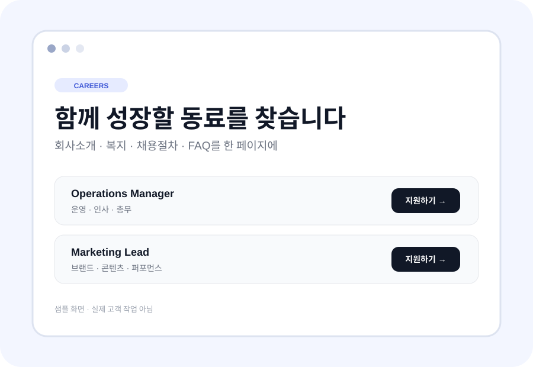

채용공고 정비
회사소개 → 역할 → 조건 → 복지 → 절차 → 지원 CTA
긴 공고와 흩어진 정보를 지원자가 빠르게 이해하도록 정리합니다. 공고 1~3건처럼 작은 범위부터 시작합니다.
무료 5분 진단은 방향 확인까지 · 제작은 범위 합의 후 작은 유료 작업으로 시작합니다.

회사소개 → 역할 → 조건 → 복지 → 절차 → 지원 CTA
회사·복지·FAQ·모집직무를 한 페이지에
출근·서류·첫날 일정·FAQ를 한곳에
※ 예시 구조이며 실제 고객 성과가 아닙니다. 가능한 경우 당일·익일 납품이 가능한 작은 범위를 우선 제안합니다.
채용·인사운영 실무 경험을 바탕으로 지원자와 담당자가 덜 헤매는 결과물부터 만듭니다. 반복되는 수정이 생길 때만 관리·자동화를 붙입니다.
5분 진단으로 시작점을 확인하고, 범위 합의 후 공고 1~3건부터 유료로 정리합니다.